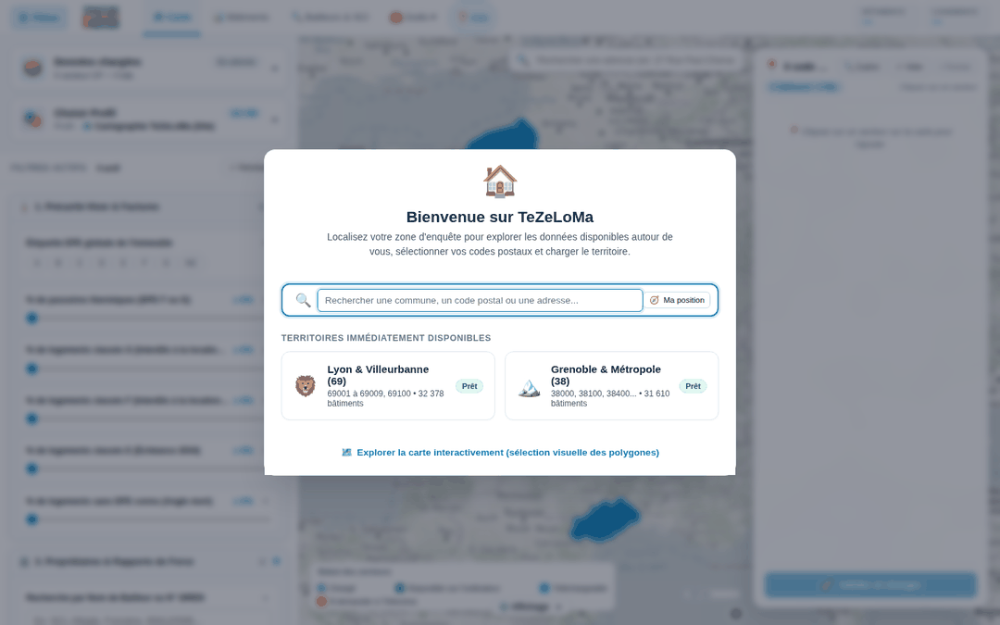
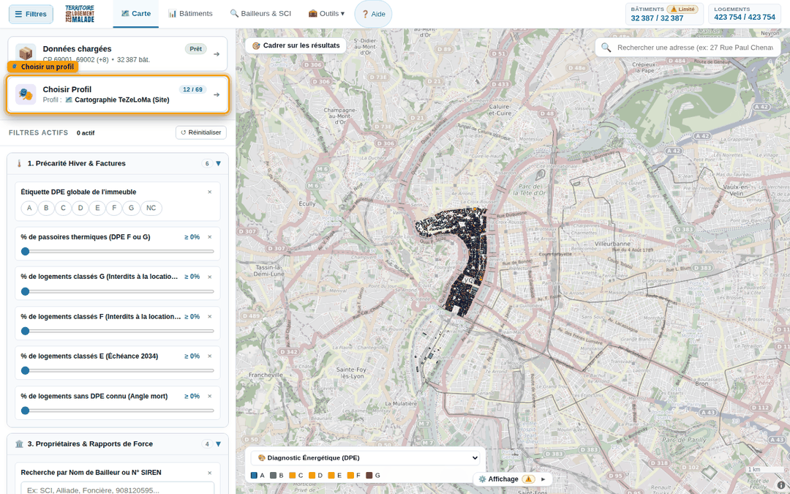
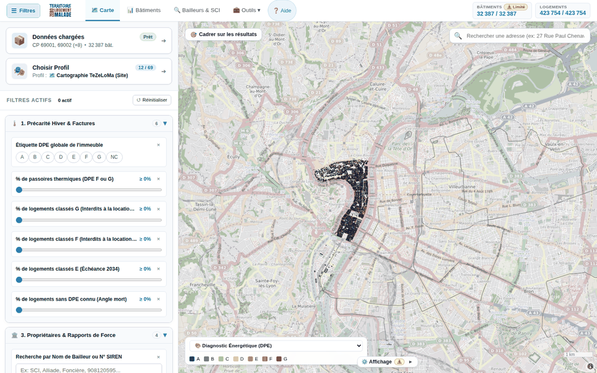
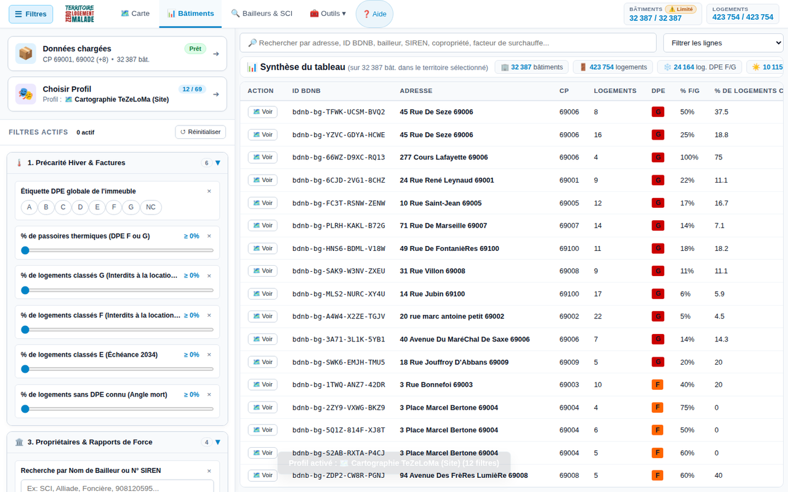
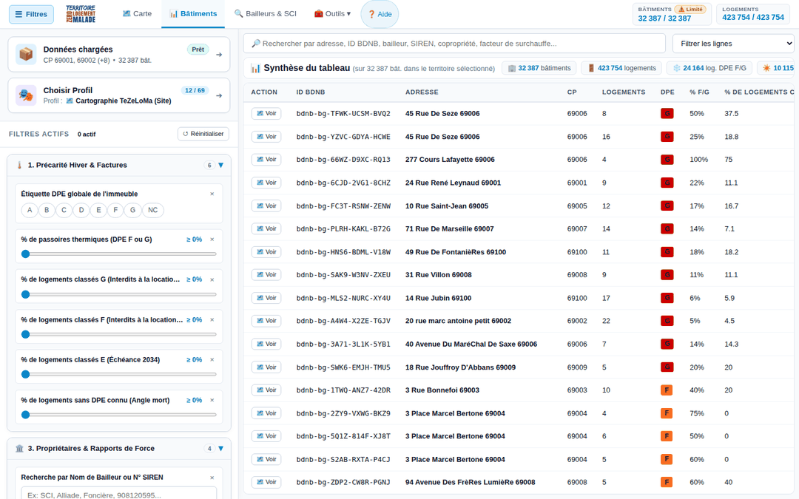
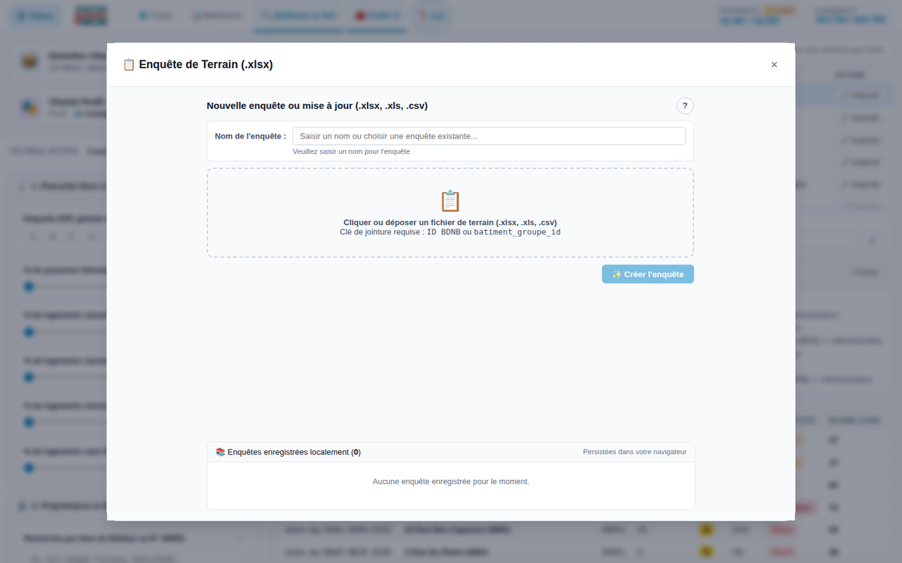
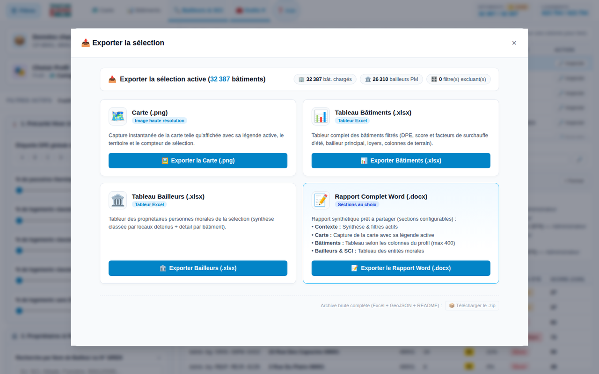
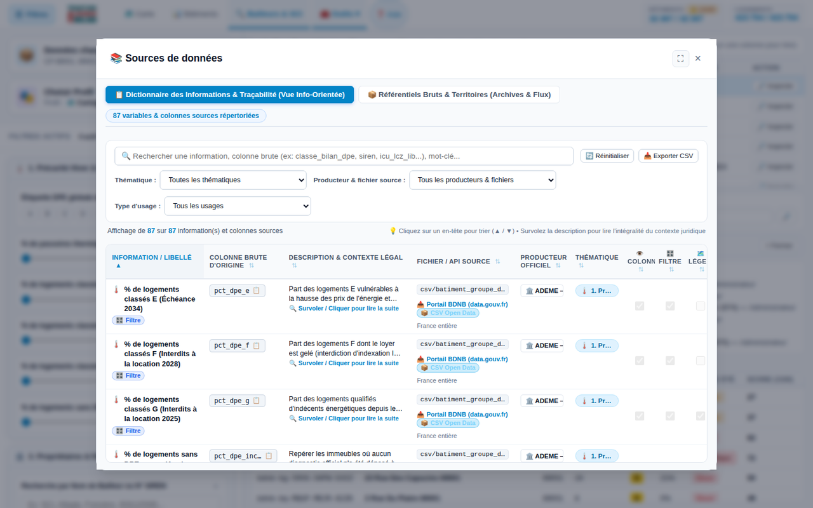

| SIREN | Dénomination | Forme Juridique | Bâtiments (sélection) | Locaux (sélection) | Patrimoine Total (locaux) | Commune du Siège | Action |
|---|
Clé de jointure requise :
ID BDNB ou batiment_groupe_id
Carte (.png)
Image haute résolutionCapture instantanée de la carte telle qu'affichée avec sa légende active, le territoire et le compteur de sélection.
Tableau Bâtiments (.xlsx)
Tableur ExcelTableur complet des bâtiments filtrés (DPE, score et facteurs de surchauffe d'été, bailleur principal, loyers, colonnes de terrain).
Tableau Bailleurs (.xlsx)
Tableur ExcelTableur des propriétaires personnes morales de la sélection (synthèse classée par locaux détenus + détail par bâtiment).
Rapport Complet Word (.docx)
Sections au choix
Rapport synthétique prêt à partager (sections configurables) :
• Contexte : Synthèse & filtres actifs
• Carte : Capture de la carte avec sa légende active
• Bâtiments : Tableau selon les colonnes du profil (max 400)
• Bailleurs & SCI : Tableau des entités morales
🇫🇷 Échelle Nationale — France entière (Section indépendante : sources nationales sans découpage départemental) 2 sources nationales ▼
🗺️ Département du Rhône (69) (Sources départementales + sous-section imbriquée Ville de Lyon) 6 tables départementales + 1 sous-section locale ▼
open_data_millesime_2025-07-a_dep69_csv.zip (CSTB BDNB, 505 Mo) intégrée dans buildings.parquet (313 979 bâtiments) et building_owners.parquet (101 905 liens propriétaires personnes morales) :
↳ 🦁 B. Sous-section imbriquée : Lyon (& Villeurbanne — 69001 à 69009, 69100) — Cliquer pour déplier les sources spécifiques à Lyon 3 sources locales spécifiques ▼
⛰️ Département de l'Isère (38) (Sources départementales 38 + sous-section imbriquée Ville de Grenoble) 6 tables départementales + 1 sous-section locale ▼
open_data_millesime_2025-07-a_dep38_csv.zip (CSTB BDNB, 611 Mo) intégrée dans buildings.parquet (371 148 bâtiments) et building_owners.parquet (70 056 liens propriétaires personnes morales) :
↳ 🏔️ B. Sous-section imbriquée : Grenoble (& Métropole — 38000, 38100, 38400, 38130...) — Sources spécifiques à Grenoble 3 sources locales spécifiques ▼
🌊 Départements ajoutés : Loire-Atlantique (44), Seine-Maritime (76), Hérault (34) (Nantes · Rouen · Montpellier — départements entiers) 3 départements complets, sources BDNB uniquement ▼
open_data_millesime_2025-07-a_dep44|76|34_csv.zip (CSTB BDNB, millésime 2025-07-a, téléchargées automatiquement depuis le stockage Open Data BDNB) traitées en entier, sans filtre de commune :
44 (Loire-Atlantique / Nantes) — 515 411 bâtiments / 67 449 liens propriétaires (83 codes postaux) ·
76 (Seine-Maritime / Rouen) — 399 918 bâtiments / 63 887 liens (91 codes postaux) ·
34 (Hérault / Montpellier) — 386 030 bâtiments / 68 414 liens (81 codes postaux).
Fusionnés dans buildings.parquet et building_owners.parquet (total national consolidé : 1 986 486 bâtiments et 371 711 liens) sans altérer Rhône et Isère, puis découpés en 444 chunks par code postal (+ 5 bundles départementaux) et cartographiés dans postal_zones.geojson (2 042 zones communales).
icu_*, zone_encadrement_loyers et loyer_* restent donc non renseignés et le score de surchauffe estivale TeZeLoMa est calculé sur les caractéristiques d'enveloppe du bâtiment (BDNB/DPE). L'intégralité des données brutes départementales a été préservée sans exclusion.
1. 🚀 Démarrage & Chargement d'un Territoire
TeZeLoMa découpe les données nationales (BDNB, DPE, MAJIC, ICU, loyers) en paquets de données par code postal. À l'ouverture, choisissez un raccourci (ex. Lyon & Villeurbanne, Grenoble), utilisez 🧭 Ma position ou sélectionnez vos codes postaux directement sur la carte, puis cliquez sur 🚀 Valider et charger.

2. 🧩 Beaucoup de données : pourquoi Profils & Filtres ?
Les bases publiques ouvertes (BDNB, DPE, fichiers fonciers MAJIC, îlots de chaleur, loyers, DVF, RNIC, RPLS…) contiennent une quantité considérable d'informations sur chaque immeuble. Tout afficher en même temps serait illisible — et vous n'avez pas besoin de tout pour chaque enquête.
- 1. Choisir un Profil pour trier les informations : un profil sélectionne uniquement les colonnes, les indicateurs de filtrage et les légendes utiles à votre objectif dans l'application.
- 2. Activer des Filtres pour cibler les bâtiments : limiter les colonnes rend l'interface claire, mais il reste encore des milliers de bâtiments sur le territoire. Utilisez ensuite les filtres du panneau latéral gauche pour n'afficher que ceux qui vous intéressent (ex. DPE F/G, surchauffe élevée, bailleur personne morale…).
3. 🎭 Profils (personnaliser l'information visible)
Cliquez sur 🎭 Choisir Profil dans le panneau gauche pour ouvrir le catalogue d'indicateurs. Vous pouvez partir d'un modèle prêt à l'emploi ou composer entièrement votre vue :
- Colonnes visibles : cochez les indicateurs que vous souhaitez voir apparaître dans le tableau 📊 Bâtiments et dans les exports.
- Indicateurs filtrables : les indicateurs cochés deviennent immédiatement des filtres disponibles dans votre panneau latéral gauche (avec recherche par mot-clé et onglets thématiques pour les retrouver facilement).
- Légendes & coloration : adaptez les axes d'analyse disponibles sur la carte.
- Sauvegarde personnalisée : cliquez sur 💾 + Sauvegarder ce profil pour enregistrer votre configuration (et, si vous le souhaitez, mémoriser aussi les seuils de filtres déjà réglés).

4. 🗺️ Carte Interactive
- Coloration (en bas à gauche) : basculez entre 🎨 Diagnostic Énergétique (DPE), ☀️ Risque Surchauffe Estivale, 🏢 Concentration Foncière et 📋 Enquête de Terrain.
- ⚙️ Affichage (en bas au centre) : réglez l'atténuation du Fond neutre (0–100 %) et la Limite bât. (1 500 à Tous) pour garder une carte fluide.
- Recherche & cadrage : recherchez une adresse précise dans la barre en haut, ou cliquez sur 🎯 Cadrer sur les résultats pour zoomer sur les bâtiments filtrés.
- Clic sur un bâtiment : ouvre sa fiche détaillée à droite (DPE, score de surchauffe, propriétaires personnes morales, loyers, DVF, QPV, RPLS, RNIC).

5. 📊 Bâtiments (Tableau & Interactions)
L'onglet 📊 Bâtiments vous permet de passer de la vue géographique à une analyse ligne par ligne des immeubles retenus par vos filtres, avec uniquement les colonnes de votre profil actif.
- Recherche instantanée : filtrez par adresse,
ID BDNB, nom de bailleur,SIREN, nom de copropriété ou facteur de surchauffe. - Mode Filtrer vs Surligner : choisissez Filtrer les lignes pour isoler les résultats, ou Surligner les lignes pour les repérer visuellement tout en gardant le reste du tableau autour.
- Bandeau de synthèse : suit en temps réel le nombre de bâtiments, logements, logements DPE F/G, bâtiments en surchauffe et bâtiments avec bailleur personne morale.
- Bouton 👁️ Voir : cliquez sur Voir sur n'importe quelle ligne pour basculer automatiquement sur la carte, centrer sur l'immeuble et ouvrir sa fiche détaillée.

6. 🔍 Bailleurs & SCI (Enquête sur les propriétaires)
L'onglet 🔍 Bailleurs & SCI sert à identifier les propriétaires personnes morales (SCI, foncières, sociétés commerciales, bailleurs sociaux) qui concentrent des logements dans votre sélection et à lever l'anonymat sur leurs dirigeants.
- Classement des multipropriétaires : le tableau supérieur classe les entités morales par nombre de locaux détenus dans votre sélection (avec leur patrimoine total MAJIC et la commune du siège). Cliquez sur n'importe quelle colonne pour trier.
- Interrogation en direct (API Gouv) : sélectionnez un bailleur dans le tableau ou la liste déroulante, ou saisissez directement un numéro SIREN / une raison sociale puis cliquez sur 🔎.
- Détail complet de l'entité : l'outil interroge en temps réel l'API officielle
recherche-entreprises.api.gouv.fret affiche la fiche légale, la liste des dirigeants / gérants (nom, prénoms, année de naissance, qualité) et le tableau de tous les immeubles détenus par cette entité sur le territoire actif.

7. 📋 Enquête de Terrain (.xlsx, .xls, .csv)
Ajoutez vos propres données : exportez votre sélection au format Excel depuis 📥 Exporter, ajoutez-y vos propres colonnes (ex. statut, notes, priorite), puis réimportez le fichier ici en tant qu'« Enquête de Terrain ».
- Visible partout : les informations ajoutées apparaissent automatiquement dans le tableau 📊 Bâtiments et dans vos exports.
- Filtrable : chaque colonne ajoutée devient un filtre dans le panneau latéral gauche.
- Cartographiable : utilisez vos colonnes pour colorer les bâtiments sur la carte via le sélecteur de légende.

8. 📥 Exports (PNG, Excel, Rapport Word, ZIP)
Exportez à tout moment votre sélection filtrée en Carte (.png) avec légende intégrée, en tableur Bâtiments (.xlsx) ou Bailleurs (.xlsx), en Rapport Complet Word (.docx) avec sections configurables, ou en archive complète .zip (Excel + GeoJSON).

9. 📚 Sources de Données & Fonctionnement Hors-Ligne
- Traçabilité : le dictionnaire des sources détaille l'origine de chaque indicateur (BDNB/CSTB, ADEME, DGFiP MAJIC, ICU, loyers, API Entreprises).
- Fonctionnement hors-ligne : une fois chargés, les paquets de données sont enregistrés sur cet ordinateur. Vous pouvez rouvrir vos territoires et travailler sans connexion Internet (seule l'interrogation en direct des dirigeants via l'API Gouv nécessite Internet).

10. 🛠️ Dépannage & Gestion de la mémoire
- Fluidité et mémoire d'affichage (carte) : dessiner des dizaines de milliers de polygones en même temps consomme de la mémoire graphique. Dans ⚙️ Affichage (en bas de la carte), ajustez Limite bât. (
1 500,3 000,5 000ouTous les bât.). Lorsque le plafond est atteint, le badge ⚠️ Limité vous prévient : zoomez sur un quartier ou réduisez vos filtres pour voir tous les bâtiments de la zone. - Espace disque et cache local : les paquets de données téléchargés (Cache API / Service Worker) ainsi que vos profils personnalisés, filtres et enquêtes de terrain (
localStorage) sont enregistrés sur cet ordinateur. - Forcer un rechargement ou libérer de la mémoire : si un territoire semble obsolète ou bloqué au chargement, ouvrez 📦 Données chargées en haut du panneau gauche puis cliquez sur 🗑️ Vider le cache local.
- Interrogation des dirigeants (API Gouv) : si la fiche d'un bailleur reste en attente, vérifiez votre connexion Internet ou réessayez quelques instants plus tard (l'annuaire officiel
recherche-entreprises.api.gouv.frpeut limiter temporairement les requêtes rapides).
11. 📲 Installer TezeloMap comme une application
TezeloMap est une Progressive Web App (PWA) : vous pouvez l'installer sur votre ordinateur ou téléphone pour l'ouvrir dans sa propre fenêtre dédiée (avec l'icône TZLM dans votre menu d'applications ou barre des tâches), sans barre d'adresse.
- Windows & Linux (Chrome, Edge, Brave) : cliquez sur l'icône d'installation dans la barre d'adresse (à droite de l'URL), ou sur le bouton 📲 Installer en haut de l'application lorsqu'il apparaît, ou via le menu du navigateur (⋮ ▸ Caster, enregistrer et partager ▸ Installer TezeloMap…).
- macOS : via Chrome/Edge/Brave comme ci-dessus, ou dans Safari via Fichier ▸ Ajouter au Dock….
- Mobile (Android / iOS) : sur Android (Chrome), utilisez ⋮ ▸ Ajouter à l'écran d'accueil / Installer l'application ; sur iOS (Safari), appuyez sur Partager ▸ Sur l'écran d'accueil.
Limites à connaître :
- L'installation nécessite que le site soit servi en HTTPS (ou sur
http://localhosten local) ; elle n'est pas proposée en ouvrant un fichier localfile://. - Firefox sur ordinateur ne prend pas en charge nativement l'installation des PWA : utilisez Chrome, Edge ou Brave pour créer l'application de bureau.
- L'application installée réutilise le cache local du navigateur ; les tuiles de carte en ligne et l'interrogation en direct des dirigeants (
recherche-entreprises.api.gouv.fr) nécessitent toujours une connexion Internet.